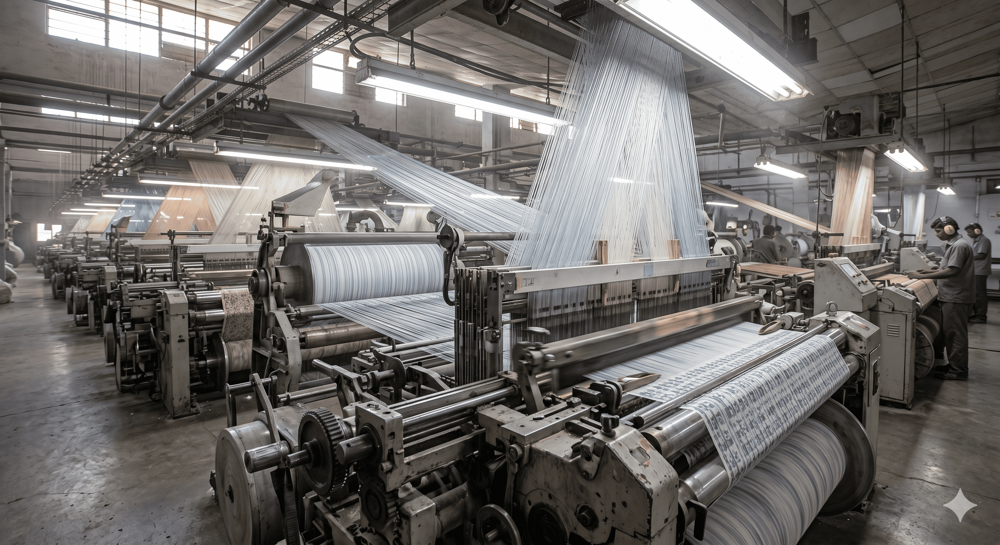

01 · Weaving
Industrial fabric weaving
Heavy-duty woven fabrics for filtration, technical, and process-industry use. Nylon, polycotton, cotton, and rayon woven to spec on GSM, sett, width, and weave structure — plain, twill, satin, and specialty patterns.
- Nylon & polycotton weaving for industrial applications
- Filter fabric for dewatering and chemical filtration
- Technical fabric for process industries
- Width-to-order, tight GSM tolerance